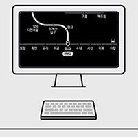
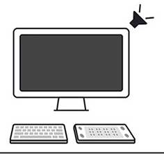
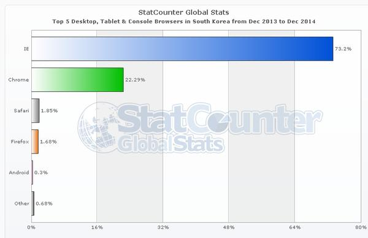

인류의 또다른 진화,WWW(World Wide Web)
WWW란?
인터넷의 기타 여러 서비스들이 텍스트 위주의 문자만을 전달할 수 있는데 반해서 WWW은 사운드, 그래픽, 동영상 등 거의 모든 형태의 데이터를 제공할 수 있다.
WWW의 탄생배경
WWW은 유럽의 CERN에서 엄청난 양의 연구 정보들을 효율적으로 공유하기 위한 목적으로1989년 3월에 Tim Bemers의 제안에 의해 연구가 시작되어 이루어진 것이다.
이에 대한 첫번째 제안서는 1990년 11월에 나왔고 Tree 구조의 메뉴 방식으로 이루어진 고퍼가 문서 이용에 불편함을 주는데 비해 하이퍼텍스트를 기반으로 이루어진 WWW은 문서 활용의 편리성을 한껏 제공해 주게 되었다.

<이 아저씨가 Tim Bemers!>
WWW의 구조와 기능
하이퍼텍스트라는 기능에 의해 인터넷상에 분산되어 존재하는 온갖 종류의 정보를 통일된 방법으로 찾아볼 수 있게 하는 광역 정보 서비스 및 소프트웨어.웹 브라우저는 전 세계에 산재해 있는 웹 서버들로부터 HTML 문서들을 불러내 이용자가 읽을 수 있도록 클라이언트의 화면에 웹 페이지 형태로 디스플레이해 주는 하이퍼텍스트 리더 소프트웨어다.
웹이 출현한 이후 현재까지, 최초의 브라우저인 버너스-리의 월드와이드웹에 이어 인터넷 익스플로러, 구글 크롬등 수십 종의 브라우저들이 개발되어 왔다.
인터넷은 기본적으로 클라이언트-서버 모델(client-server model)을 기반으로 하는데, 서버는 네트워크를 통해 연결되어 있는 클라이언트의 요청에 따라 정보를 제공한다웹 사이트는 인터넷상의 월드와이드웹을 통해 접근할 수 있는 웹 페이지들의 모음이다.
WWW의 특징
과제를 마치며 한줄소감!
WWW의 탄생은 현재 어디에도 있고 지구를 연결해주는, 인류에게 없어서는 안될 존재가 되버릴 정도로 아주 큰 영향을 끼쳤다.
그래서 나는 WWW가 인류의 또다른 진화라고 이름을 붙여주고자 한다.
웹 접근성(Wed Accessibility)
접근성?(Accessibility)
장애나 나이와 관계없이 누구나 어떤 서비스를 활용할 수 있어야 한다는 개념을 ‘접근성’이라고 한다. ‘배리어 프리(barrier free)’ 혹은 ‘보편적 설계’라고 표현하기도 한다.
일상에서도 접근성을 높이기 위한 사소한 장치들을 만나볼 수 있다. 건물 턱 없애기, 저상버스 확충하기, 휠체어가 올라갈 수 있는 경사 만들기, 저시력자를 위한 확대경 구비 등이 해당한다.
웹 접근성의 개념
장애인과 비장애인이 동등하게 서비스에 접근할 수 있게 만들어줘야 한다. 이런 맥락에서 제시되는 개념이 ‘웹 접근성’(Web Accessibility)이다.
| 구분 | 설명 | |
|---|---|---|
|  | 저시력 시각장애 | 저시력 시각장애인을 위한 웹접근성 지침 콘텐츠와 배경간의 명도 대비는 4.5:1 이상이 되게 한다. 1초에 3회 이상 깜빡거림이 있는 콘텐츠는 제공하지 않는다. 색상, 크기, 방향, 위치, 음향 효과 만으로 정보를 전달하지 않는다. |
|  | 전맹 시각장애 | 전맹 시각장애인을 위한 웹접근성 지침 이미지 콘텐츠는 정보 그대로 대체 텍스트로 제공한다. 자동으로 재생되는 음성 정보는 사용자가 제어할 수 있게 한다. 반복되는 콘텐츠를 건너뛸 수 있는 링크를 제공한다. |
| 손 운동 장애 | 손 운동 장애인을 위한 웹접근성 지침 웹브라우징 도구의 기본 인터페이스를 제한하지 않는다. 사용자가 의도하지 않은 기능은 실행되지 않게 한다. 포커스를 받은 영역은 시각적으로 구분이 가능해야 한다. | |
<출처:네이버'널리'>
웹 접근성은 장애인이나 고령자는 물론 어떤 사용자들도 웹사이트에서 제공하는 정보를 비장애인과 동등하게 접근하고 활용할 수 있도록 하자는 개념이다.
월드 와이드 웹을 창시한 팀 버너스 리는 웹을 “웹의 힘은 보편성에 있으며, 장애에 구애 없이 누구나 손쉽게 접근할 수 있는 공간”으로 정의했다.
또한, W3C에서 만든 웹 접근성 이니셔티브(WAI : Web Accessibility Initiative)에 따르면 웹 접근성은 ‘장애를 가진 사람들도 웹을 이용할 수 있도록 보장하는 것으로,
장애를 가진 사람들이 웹 콘텐츠를 인지하고(Perceivable), 운영하고(Operable), 이해하고(Understandable), 기술에 상관없이 이용할 수 있도록 견고하게(Robust) 웹 콘텐츠를 만드는 것’으로 정의된다.
국내에도 웹 접근성과 관련된 법 조항이 있다.
과제를 마치며 한줄소감!
이과제를 제출하고 나서 교수님께선 말씀하셨다.
장애가 있던 없던, 누구나 동등히 서비스를 이용할 수 있어야 한다고, 또한 장애가 있는 사람들 위주로 챙겨주다 비장애인들이 피해를 보는 일도 없어야 한다고.
이것을 듣고 난 또다시 생각한다. 인터넷이란 존재는 정말 대단하다고, 모든 이 세상 사람들을 계급장 떼고 동등하고, 또 평등히 하나로 묶어줄 수 있지 않은가?
어찌보면 신보다도 더 능력있는 존재이기도 하지 않은가?
웹 표준(Web Standards)
웹 표준이란?
월드 와이드 웹의 측면을 서술하고 정의하는 공식 표준이나 다른 기술 규격을 가리키는 일반적인 용어이다. 최근에 이 용어는 웹 사이트를 작성하는 데 중요도가 높아지고 있으며 웹 디자인, 개발과 관계가 있다.
수많은 상호 의존성이 있는 표준들과 규격들 가운데 일부는 단지 월드 와이드 웹으로만 끝나는 것이 아니라, 인터넷의 관리 측면이기도 하며 이러한 표준들은 직간접적으로 웹 사이트, 웹 서비스 개발과 관리에 영향을 주고 있다.
이러한 것들 모두 "웹 표준"이라고 부르지만 웹 표준으로 이동하는 것을 찬성하는 사람들은 사용성과 접근성에 직접 영향을 미치는 더 높은 수준의 표준에 초점을 두는 경향이 있다.
더 넓은 뜻의 웹 표준은 다음을 이룬다:
- W3C (World Wide Web Consortium)
- 국제 인터넷 표준화 기구 (IETF)가 출판한 인터넷 표준 (STD) 문서
- 국제 인터넷 표준화 기구 (IETF)가 출판한 RFC (Request for Comments) 문서
- 국제 표준화 기구(ISO)가 출판한 표준들
- Ecma 인터내셔널 (이전 이름은 ECMA)이 출판한 표준들
- 유니코드 컨소시엄이 출판한 유니코드 표준과 다양한 유니코드 기술 보고서 (UTR)
- 인터넷 할당 번호 기관 (IANA)이 운영하는 이름과 번호 레지스트리
웹 표준의 일반적인 이용
웹 사이트나 웹 페이지가 웹 표준을 준수한다는 것은 일반적으로 올바른 HTML, CSS, 자바스크립트를 사이트나 페이지가 가지고 있다는 것을 뜻한다. HTML은 접근성과 시맨틱 HTML의 가이드라인을 충족해야 한다.
웹 표준을 논할 때 일반적으로 다음의 것들이 중요성이 있는 것으로 보인다:
- HTML, XHTML, SVG, XForms와 같은 마크업 언어의 W3C 권고
- 스타일시트, 특히 CSS의 W3C 권고
- 흔히 자바스크립트나 ECMA스크립트로 불리는 Ecma 인터내셔널 표준
- 문서 객체 모델의 W3C 권고
웹 접근성은 일반적으로 W3C의 Web Accessibility Initiative가 출판한 웹 콘텐츠 접근성 가이드라인에 기반을 두고 있다.
웹 표준의 중요성
- 모든 사람들이 자유롭게 접근 가능
:ex)장애인이나 고령자분들도 접근하기가 보다 수월해진다. - 수정 & 운영관리가 더욱 용이해짐
:디자인 및 설계의 효율성, 컨텐츠의 올바른 구조화로 제작 부담이 줄어든다. - 여러가지 IT기기 호환성
:모바일 및 어느 다른 기기를 사용해도 충돌이 없이 깨끗한 사용이 가능하다.
과제를 마치며 한줄소감!
전세계의 수많은 사람들이 사용하는 만큼 당연히 표준점이 필요할것이라고 생각했는데...이런거 어떻게 다 생각하고 정하지...
이런 기준들 만드신 모든 분들께 수고와 경의를 표한다.정말 대다내...
오늘은 정말 한줄소감..ㅎ
크로스 브라우징(Cross Browsing)
크로스 브라우징이란?
웹표준 기술을 적용하여 서로 다른 OS 또는 플랫폼에서도 인터넷이 이상 없이 구현되는 기술을 말한다.
여기서의 윂표준은 말그대로의 웹의 표준적인 규칙의 체계화이고,
크로스 브라우징은 모든 브라우저가 동일한 정보를 보여주는 통일성이다.
<익스플로어, 크롬, 파이어폭스, 사파리, 오페라의 이미지>
즉, 인터넷 익스플로러(IE), 크롬, 사파리, 파이어 폭스, 오페라 등 여러 브라우저의 종류와 상관없이 홈페이지를 이용할 때
아무런 이상 없이 작동될 수 있도록 웹페이지를 제작하는 방법이며,
웹브라우저의 종류에 상관없이 웹사이트의 레이아웃 위치나 모양이 동일하게 보여지도록 하는
상호 호환성에 대한 기술을 말한다.
크로스 브라우징의 필요성
이용자들은 다양한 브라우저와 OS, 다양한 기기들을 통해 접속하기 때문에 일부 환경에서는 접속되지 않거나, 제대로 작동되지 않을 수 있다.
이용자들이 각자의 브라우저로 웹사이트에 방문했을 때 정보 공유에서 소외감을 느끼지 않도록 하도록 해야한다.

<세계와 우리나라의 브라우저 점유율 표.2014>
마지막 과제를 마치며 한줄소감!(항상 한줄은 아니었다)
위에 있는 표를 확인해보면, 세계적으로 가장 많이 쓰이는 브라우저는 크롬(Crome)이다.
하지만 아직까지 우리나라는 압도적으로 인터넷 익스플로어(IE)가 많다.
익스플로어(IE)는
지들만의 기술을 적용하여 다른 브라우저에서는 호환되지 않거나 다르게 표시되는 부분이 있어 많은 사람들이 불편해했다.
크로스 브라우징의 대표적인 문제점이자 사례라고 짚을 수 있다.
이러한 문제점들이 불거지기 이전에 만든 국내의 수많은 웹 사이트들은
W3C가 제공하는 HTML의 표준을 따르지 않고 IE를 기준으로 제작이 되어져왔다.
시대가 변하면서 보안과 성능이 개선된 엡 브라우져들이 계속 생기고 모바일에서도 웹 사용이 대중화 되면서
과거 IE만 사용하던 국내 사용자들도 다양한 웹 브라우져를 접하게 되고
크로스 브라우징에 대한 중요성을 인지하게 되었지만 아직도 IE에 대한 의존도가 높다.
이러한 이유때문과 그냥 쓰던거 쓰자는듯한 느낌의 IE를 벗어날 수 없는 우리나라의 현실이 안타깝다고 생각이 되었고
빨리 이러한 문제점들이 개선되었으면 하는 아쉬움이 남게 되었다.
친구들이 웹 접근성과 크로스 브라우징이 헷갈린다고 하는데, 나는 여행처럼 생각한다.(부산으로 예를 들어보자)
웹 표준이란 어떤 사람이던 부산에 가고 싶으면 누구나 부산에 갈 수 있도록 하는 것이고,
크로스 브라우징은 어떠한 이동수단(배,비행기,자동차 등등)이용하던 부산에는 다 도착하도록 하는 것.제가 제대로 이해한거 맞죠?아닌가